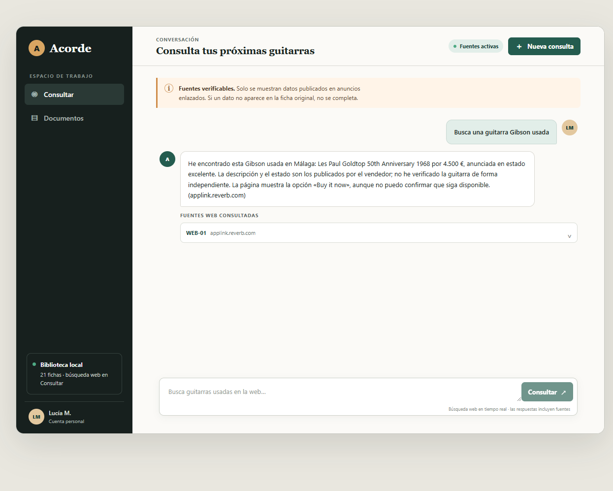
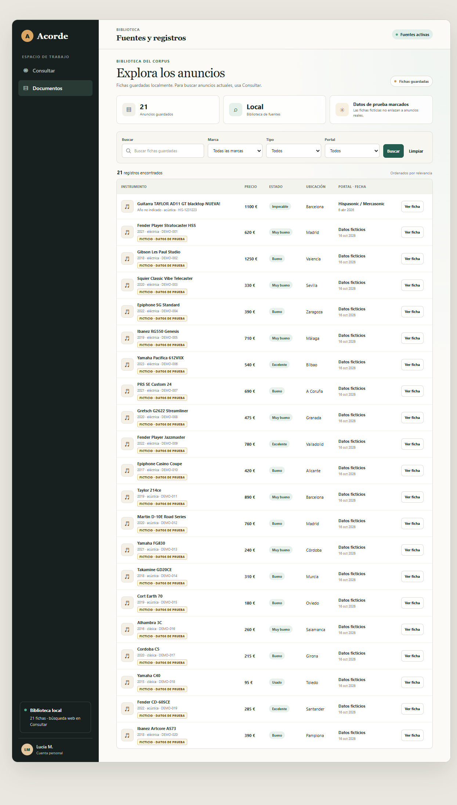
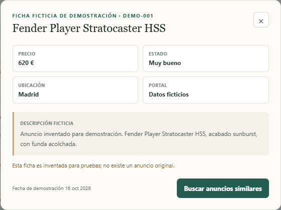
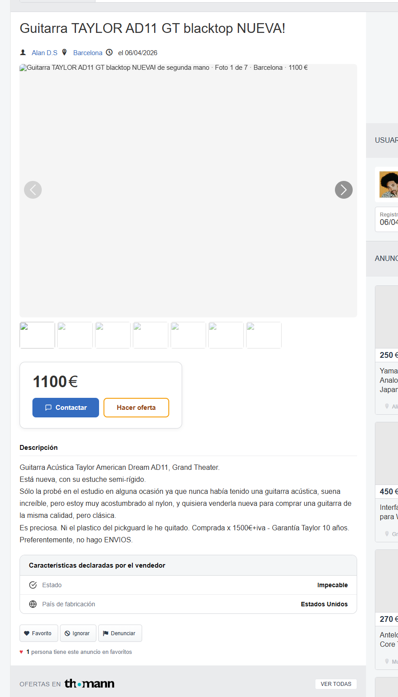

01 · El problema
Encontrar anuncios fiables lleva más trabajo que buscarlos.
La necesidad planteada: reunir hasta 50 anuncios de guitarras de segunda mano, poder compararlos y respaldar cada respuesta con su fuente.
El trabajo que se repite
- 1Buscar por marca, modelo y zona en cada portal; algunos sitios ni siquiera cargan desde la red corporativa.
- 2Abrir y leer cada anuncio para comprobar precio, condición declarada, ubicación y detalles ausentes.
- 3Transcribir y comparar las fichas, evitar duplicados y conservar enlaces que permitan revisar la fuente.
- 4Repetir la comprobación: una página de resultados o una ficha antigua no demuestra disponibilidad actual.
No se registró cuánto tarda hoy el equipo ni su coste horario; no invento una cifra. La fórmula deja claro qué medir en una prueba manual de referencia.
02 · La solución
Consultar la web y ver de dónde sale cada respuesta.
El chat busca en la web desde el servidor; la clave no llega al navegador. Las citas aparecen debajo de la respuesta y enlazan a la página que se puede revisar.

02 · La solución
La biblioteca local distingue realidad de demostración.
Los anuncios guardados y el buscador web son superficies separadas. Los registros inventados están identificados en el listado y no llevan a anuncios externos.


03 · Qué comprobé
Una ficha abierta y contrastada; precisión global aún sin medir.

- Fuente abierta
- Hispasonic · Taylor AD11
- Cifra visible
- 1.100 €
- Ubicación / fecha
- Barcelona · 06/04/2026
- Condición
- «Impecable», según el vendedor
- Comprobación puntual
- Título, precio y ubicación: 3 de 3 aparecen en la página abierta. El año no consta.
¿Cuántos acierta?
No hay un conjunto de consultas con respuestas correctas etiquetadas; por tanto, no se puede calcular precisión ni porcentaje de acierto. En una consulta Gibson, la búsqueda devolvió una cita de Reverb, pero la apertura directa quedó bloqueada por el filtro corporativo; ese resultado no se cuenta como verificado.
Cuando no encuentra fuente
La API devuelve un mensaje explícito de ausencia de resultados verificables y una lista de fuentes vacía. La prueba automatizada de ese comportamiento usa una respuesta sin citas; no se presenta como una búsqueda real sin resultados.
Cita Reverb mostrada en el chat (apertura bloqueada por la política corporativa)
04 · Qué falta
Para usarlo en el servicio hacen falta acceso, datos y medición.
La solución es un prototipo funcional, no un inventario validado ni un servicio de compra.
Antes de ponerlo en uso
- Acceso aprobado a fuentes. Solicitar al área responsable la habilitación de portales necesarios. En la prueba, Hispasonic abrió; la ficha de Reverb fue denegada por el filtro corporativo como categoría Shopping.
- Corpus real y con permiso. Aportar enlaces o una fuente autorizada para reunir anuncios auténticos; sustituir o retirar las 20 fichas de demostración.
- Reglas de actualización. Definir frecuencia de reconsulta, deduplicación, caducidad y tratamiento de anuncios retirados; el resultado de búsqueda no garantiza stock.
- Evaluación de calidad. Etiquetar consultas de prueba y resultados esperados; medir precisión de citas, exactitud de precio/ubicación y falsas coincidencias antes de confiar en recomendaciones.
- Coste y operación. Confirmar presupuesto y límites del servicio de búsqueda web, registrar tiempos manuales de referencia y acordar responsable de mantenimiento.
- Revisión humana. Confirmar directamente con el vendedor estado, disponibilidad, gastos de envío y condiciones antes de comprar.
La clave de OpenAI se conserva en el servidor. El chat consulta la web; la pestaña Documentos solo muestra la biblioteca local.